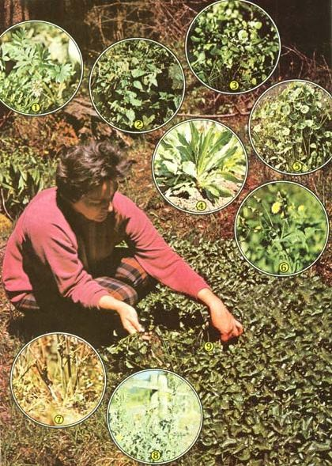
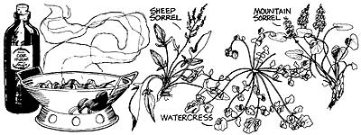

The best things in life are free . . . and that applies to some of the tastiest, most nutritious vegetables and herbs in the entire plant world, as Ferris Weddle points out below.
A few years ago, the outdoor editor of our local (Kamiah, Idaho) daily newspaper approached me with a story idea. "Why don't you put together a complete meal-salad, main course, side dishes, dessert, everything -comprised entirely of wild plants . . . and write it up for our next `outdoor recreation' supplement? "
Being a natural foods forager from way back, all I could think of as an answer was: "Sure! "
The editor's response: "OK. Have the story on my desk in four days."
Holy mackerel! What had I done There I was in early May and many-if not most -of the wild edibles I normally foraged (things like lamb's-quarters, green amaranth, purslane, mustards, and other frost-sensitive fare) weren't out yet! Even such hardy volunteer plants as the docks and sorrels weren't far enough along to eat.
But I had committed myself, so-accompanied by my sister, Nita-I took to the countryside fully expecting to find few-or no-wild vegetables worth eating (let alone writing about). Imagine our surprise, then, when we ran up against copious quantities of miner's lettuce, watercress, yellow monkey flower, spearmint, dog-tooth violet, wild hyacinth, plantain, salsify, burdock, and other delicious "free eats"! Even in early spring, we had learned, foraged fare was out in abundance . . . and, as a result, I got my story.
From this experience I learned that it is possible to gather wild foods (whole sack-loads of 'em, in fact) even as far north as Idaho and as early as spring or late winter. . . IF you know which plants to look for.
One of the more abundant springtime "volunteer vegetables" here in Idaho is waterleaf (Hydrophyllum capitatum), a delicate, leafy herb that grows in moist, rich, shaded soils-at elevations ranging from sea level to 9,000 feet-throughout the West. (Two related species- H. canadense and H. virginianum -thrive in the northeastern U.S., where the plants are sometimes called "John's cabbage".)
The nice thing about waterleaf is that all parts of it-roots, stems, blossoms (when young), and leaves-are edible. (The stems-in particular-are delightful in salads, or pickled.) Even after the plant's purplish flowers-each of which resembles a cat's paw-have appeared and the leaves are old, there's no bitter taste . . . at least, not in the species I've been eating.
I like to steam enough of this plant's leaves and stems to make two cups of cooked greens. Then-for ten minutes -I simmer together one tablespoon each of vegetable oil and honey, the juice of half a lemon, two tablespoons of cider vinegar, two green apples (chopped or sliced, unpeeled), one teaspoon each of caraway seed and celery seed, and a quarter teaspoon of mace or allspice. Finally, I combine the steamed greens with the hot apple/ seasonings mixture, and serve the resulting "Sweet and Sour Waterleaf" as a delightful meal for two.
Offhand, you wouldn't think that the common stinging nettle-with its thousands of bothersome needle-sharp hairs-would make a good potherb . . . but the truth is, it's a fantastic potherb!
When young-which I define as less than a foot tall-nettles are a delicious spinach substitute . . . and a nutritious one, too: The heartshaped leaves are packed with protein, iron, vitamin A, and ascorbic acid. (Perhaps this explains why Euell Gibbons called the stinging nettle- Urtica dioica -"one of the finest and most nutritious foods in the whole plant kingdom".)
Few plants-wild or otherwise-are as versatile as the weedlike nettle. Europeans have valued the spiny herb as a source of textile fibers for centuries. When dried (to destroy the many stinging hairs), nettles make an excellent livestock feed ... and when the cows and chickens are done with it, the plant returns to the ground as a nutrient rich organic fertilizer. (The dried greens also can be used to make tea.)
You'll want to harvest nettles as you would prickly pears . . . that is, armed with heavy gloves, a pair of scissors, and a paper bag in which to carry the plants' snipped-off tender tops. (Once the foliage has been dried or boiled, it no longer "stings" and is safe to handle . . . and to eat.)
Nettle roots are edible, too, although they tend to be a bit fibrous. Chop and cook the roots, strain them to remove their fibers, then-for an unusual and unusually savory soup-combine nettle roots with onions and milk, heat, and season to taste.
Nettles have quite a mild taste and you may wish to combine them with more flavorful wild edibles . . . such as older dandelions, docks, plantains, etc. I like to add onion tops and bulbs, Indian celery, sweet and hot peppers, and watercress to fresh nettles, cook everything in a small amount of water, then puree the mixture in a blender to create a creamy (and quite tasty) soup.
If you get a chance, try making some nettle rennet too: Just dissolve two cups of salt in three cups of strong nettle tea. A teaspoon of the resulting liquid-added to a pint of lukewarm milk-will set milk just as well as store-bought rennet does!
The next time you see a nettle in your back yard, then, don't curse it . . . cook it! (You'll be glad you did.)
"Miner's lettuce" (Montia perfoliata) was a favorite of the vegetable starved forty-niners. It's one of the most plentiful-and easy to recognize-wild edibles in the western U.S. (which is where it's mainly found). It's also one of few native American plants that have been introduced into Europe, where it's known as "winter purslane".
Miner's lettuce grows in moist, rich soils in forests, along streams, and at the bases of cliffs. You'll recognize the plant by its distinctive, saucer-shaped leaves, which have the appearance of being "stabbed" through the center by their supporting stem. At its tip, the stem bears one or more small, five-petaled flowers which are usually white, but occasionally pinkish.
Next to watercress, I prefer miner's lettuce over all other wild salad greens. The plant's succulent, vitamin-C-rich leaves and stems are delicious on sandwiches (far superior, in fact, to store-bought lettuce) . . . and-combined with watercress (or other cresses), wild onions, and Indian celery-they make a delicious wilted salad. In addition, the greens are very good cooked (as are the plant's roots) and-when pureed-form the basis for a unique creamed soup.
Boiled, wilted, pureed, or fresh picked, there's only one word for miner's lettuce: scrumptious!
While some folks may not savor the peppery taste of watercress (Nasturtium officinale), I'd gladly trade every domestic variety of lettuce grown for this spicy member of the mustard family.
Watercress is naturally cold-tolerant . . . which means that the herb may be harvested year round in many parts of the United States. (I've come across watercress in protected streams in mid-winter. ) Thus, you should have no trouble picking successive "crops" of young plants . . . although I find that even the older, flowering specimens (which can be quite peppery) are worth eating . . . seed pods and all.
Identifying watercress is no problem (especially if you're at all familiar with the high-priced version sold in supermarkets). Look for a prostrate, floating plant with masses of glossy, rounded leaves (and numerous threadlike roots) in slow-moving rivers and streams, or moist, seepy places.
When you do find a colony of wild watercress, make sure- before harvesting the herbs-that the water in which the plants are growing isn't polluted. If you're uncertain about whether or not the water's tainted, you can sterilize the cress by first soaking it for a half hour in halazone-treated water, then rinsing the leaves twice in clean water. (Halazone is available in most drugstores and sporting goods outlets. And do be sure-when using this, or any other chlorine-based water purifier-tofollow label directions.)
Many folks think of watercress as strictly a salad vegetable . . . and it is a toothsome salad herb, especially when wilted in hot oil with sorrels, docks, miner's (and other varieties of) lettuce, purslane, dandelions, etc.
But watercress is also delicious when served in other ways: on sandwiches, for instance, or boiled . . . or in soups. (Among my favorite dishes is a soup that I make by [1] combining cooked cress with cooked wild onions, Indian celery, and a bit of sheep sorrel or dock, [2] pureeing the vegetable mix . . . then [3] adding milk or cream and enough flour, cornstarch, or egg yolk to thicken the final product slightly.)
A number of other cresses-winter, spring, alpine, mountain, and upland, to name a few can be found in fields, on hillsides, and along roads and riverbanks throughout much of the U.S. These species grow in more arid habitats and thus aren't as succulent as watercress . . . but-like their high-priced cousin-they can be mouth wateringly good.
Bradford Angier and other natural foods experts speak glowingly of the dozen or so species of wild lettuce (all of which-like domesticated lettuce varieties-fall under the genus Lactuca ). Try some of these greens yourself, and you'll know why.
The two most common species of wild lettuce are L. canadensis (also called horseweed or tall lettuce) and L. scariola (variously known as prickly lettuce, compass plant, and "wild opium" . . . though its value as a medicinal herb is-at best-doubtful). Both of these relatives of the sunflower can-and often dog-row to heights of seven feet, both contain milky sap, and both are widely cursed as weeds.
Unlike "garden variety" lettuces, wild lettuce (regardless of species) becomes tough and bitter within a fairly short time . . . which means you'd best harvest the weedlike herbs well before they reach the Wilt Chamberlain stage. (Pick as much of the young plant as you can find . . . the leaves can be frozen for future use.)
When harvested early, wild lettuce-which tastes like regular lettuce, only more so-is good in salads. I also like to cook the slightly acrid-tasting leaves in combination with milder potherbs, such as nettles, lamb's-quarters, and young dock.
If you're looking for a springtime "wild vegetable" with zip, try horseweed or prickly lettuce. They're wild indeed!
Another lettuce-like wild edible that belongs to the sunflower family is the sow thistle (Sonchus asper). You'll find this prickly plant growing most anyplace where wild lettuce thrives (that is, along roadsides and streams, in meadows, vacant lots, and similar "weedy" habitats). In my experience, the sow thistle is a good deal better tasting and more succulent than the Lactucas.
In contrast to many other types of ferns that [1] thrive only in damp, shaded areas and [2] aren't very palatable, the bracken fern (Pteridium aquilinum) grows in open habitats in fields, on hillsides, along roads, etc.-and, when young, is a joy to eat.
Throughout the spring months, these coarse, hairy, black-rooted plants send up shoots that-because of their resemblance to the tuning end of a violin-are commonly called fiddleheads. The nascent leaf structures are considered a delicacy in New Zealand, parts of Europe, and Japan, but remain largely unappreciated in the U.S. (except for certain Indian tribes).
Bracken ferns have gained a reputation in some circles as being poisonous . . . and in fact, livestock have been known to suffer ill effects after eating large quantities of the vegetable. Only the old plants are toxic, however . . . the tender fronds (fiddleheads) of young, six- to eight-inch-tall plants are completely harmless.
While raw fiddleheads are quite good in salads, I generally prefer them cooked, since-like asparagus-the tips tend to be chewy otherwise. One of my favorite ways of preparing the fronds is to dip them in an egg-and-bread-crumb batter and fry 'em lightly. (Fiddleheads also make a savory addition to casseroles . . . especially if the dish in question contains hyacinth bulbs, dog-tooth violets, and other wild goodies.)
You'll also find that fiddleheads complement the flavor of cheese extremely well, and that the juice extracted from them can be used to thicken soups.
Even though winter is just barely behind us . . . and even though such toothsome wild edibles as curly dock, lamb's-quarters, sheep sorrel, wood sorrel, purslane, green amaranth, burdock, fireweed, mustard, and plantain haven't reached the harvest stage yet . . . you can still go after waterleaf, stinging nettle, miner's lettuce, watercress, horseweed, "wild opium", sow thistle, and bracken ferns right now!
So what are you waiting for`' Grab your gloves, pick up those shears, and head for the hills. It's harvest time for wild greens!
Any of the wild greens mentioned in the accompanying article can be wilted to create a terrific salad, but my all-time favorite salad makin's are watercress and sheep (or mountain) sorrel . . . and this is my favorite way to use them:
3 or 4 strips of bacon
2 well-packed cups of fresh watercress leaves and stems (plus a few seed pods, if possible)
1 cup of sheep sorrel or mountain sorrel
1/4 to 1/2 cup of chives, wild onions, or wild leeks (tops and bulbs), chopped
1 tablespoon of cider vinegar (or more, if desired)
Fry the bacon until crisp (and-while the pieces are cooking-combine the greens with the chives, onions, or leeks in a large bowl). Drain the strips of bacon and crumble them into small bits. Save the drippings.
Next, add the vinegar to the hot (but not hot enough to splatter) bacon grease . . . and pour the resulting combination over the wild vegetables. Then quickly toss everything, top with bacon bits, and serve. (There should be enough for two persons.)
If you're not crazy about melted pork fat-and I'm certainly not-you might want to substitute your favorite vegetable oil for the bacon drippings. Just heat the oil separately and use it as you would the grease . . . you'll still get that delicious bacon flavor from the crumbled bits.
Of course, you can-if you want-add the greens to the oil/vinegar combination and stir. (A Chinese wok is perfectly suited to this operation.) And you probably can think of still other variations on this basic recipe. Experiment!- FerrisWeddle.
|
 |
 |
|